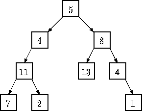

tree ::= empty tree  (integer tree tree)
(integer tree tree)
| Tree Summing |
LISP was one of the earliest high-level programming languages and, with FORTRAN, is one of the oldest languages currently being used. Lists, which are the fundamental data structures in LISP, can easily be adapted to represent other important data structures such as trees.
This problem deals with determining whether binary trees represented as LISP S-expressions possess a certain property.
Given a binary tree of integers, you are to write a program that determines whether there exists a root-to-leaf path whose nodes sum to a specified integer. For example, in the tree shown below there are exactly four root-to-leaf paths. The sums of the paths are 27, 22, 26, and 18.

Binary trees are represented in the input file as LISP S-expressions having the following form.
empty tree ::= ()tree ::= empty tree
(integer tree tree)
The tree diagrammed above is represented by the expression (5 (4 (11 (7 () ()) (2 () ()) ) ()) (8 (13 () ()) (4 () (1 () ()) ) ) )
Note that with this formulation all leaves of a tree are of the form (integer () () )
Since an empty tree has no root-to-leaf paths, any query as to whether a path exists whose sum is a specified integer in an empty tree must be answered negatively.
The input consists of a sequence of test cases in the form of integer/tree pairs. Each test case consists of an integer followed by one or more spaces followed by a binary tree formatted as an S-expression as described above. All binary tree S-expressions will be valid, but expressions may be spread over several lines and may contain spaces. There will be one or more test cases in an input file, and input is terminated by end-of-file.
There should be one line of output for each test case (integer/tree pair) in the input file. For each pair I,T (I represents the integer, T represents the tree) the output is the string yes if there is a root-to-leaf path in T whose sum is I and no if there is no path in T whose sum is I.
22 (5(4(11(7()())(2()()))()) (8(13()())(4()(1()()))))
20 (5(4(11(7()())(2()()))()) (8(13()())(4()(1()()))))
10 (3
(2 (4 () () )
(8 () () ) )
(1 (6 () () )
(4 () () ) ) )
5 ()
yes no yes no